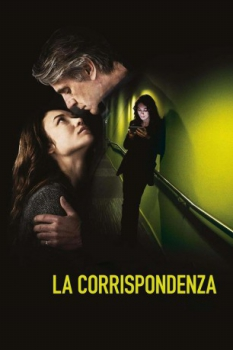

Lembranças de um Amor Eterno (2016)

Forbidden love. Undying devotion.

Avaliação (TMDb):


6.3/10 (317 votos)
Avaliação (Usuário):
Outro Título:La corrispondenza
País:Italy, 122 minutos
Idiomas falados:Inglês, Português
Gênero(s):Drama, Romance
Diretor(s):Giuseppe Tornatore
Codec:MPEG-2 (DVD)
Número: 3003
Sinopse:
O professor de astrofísica Ed Phoerum (Jeremy Irons) se apaixona por sua aluna, Amy (Olga Kurylenko). Mas os dois passam a maior parte do tempo separados e a única forma de manterem contato é se correspondendo por cartas e vídeos.
Elenco:
Jeremy Irons, Olga Kurylenko, Simon Johns, Shauna Macdonald, Simon Meacock, James Warren, Oscar Sanders, Paolo Calabresi, Anna Savva, Irina Kara
Tipo de mídia: DVD5,
Legendas: Português
Alugado: Não
Tela: 2.35:1